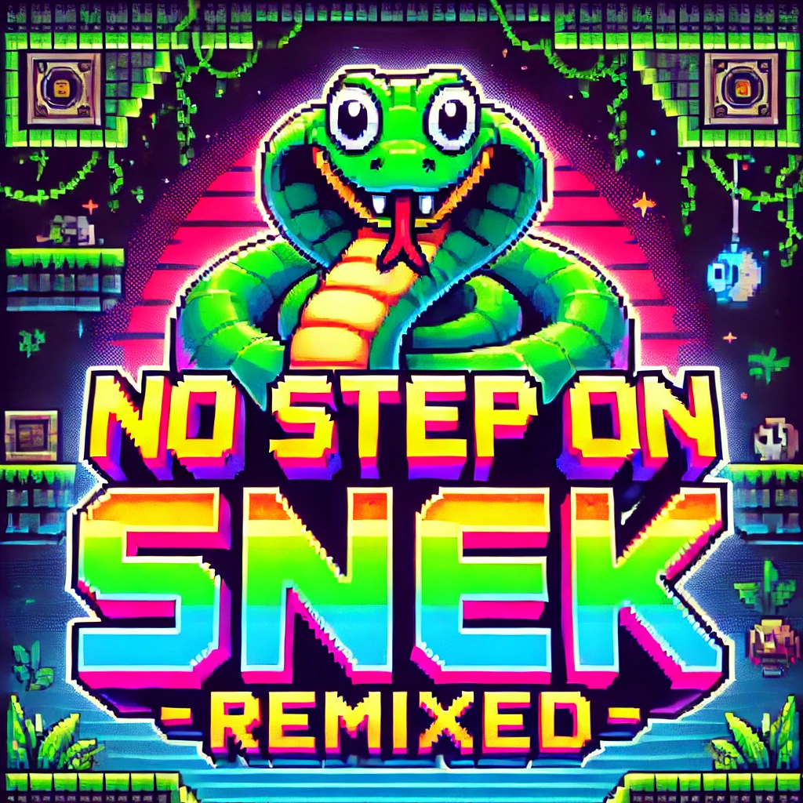
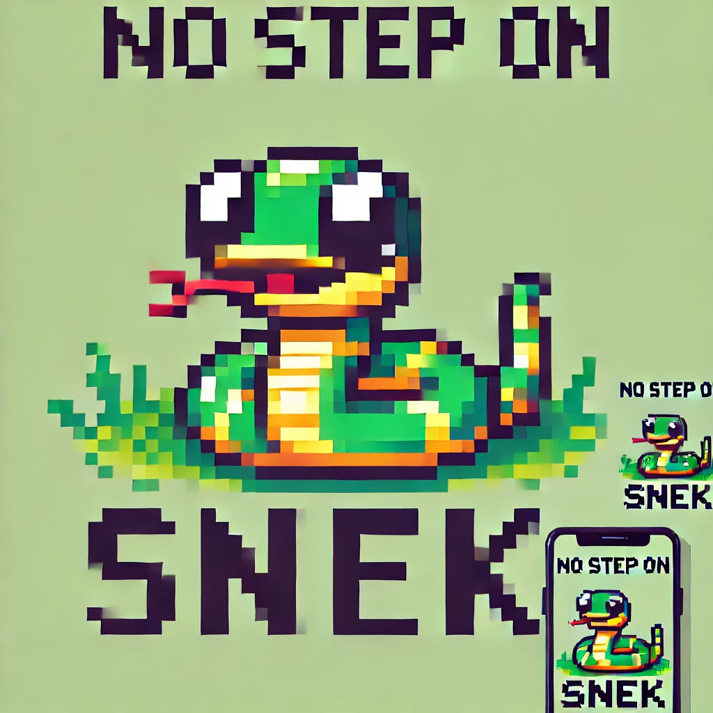

Formerly Team Charity Case
We’re now
GameChangers AI
The Hatzer family toy drive continues with GameChangers AI, the 501(c)(3) nonprofit we started to help kids and adults learn to use AI through hands-on projects. Our Christmas light show is one of those projects, built with help from ChatGPT to bring neighbors together and collect toys.
From the archive
Explore the original Team Charity Case stories, including early toy drives, family-built games, and the plans that became GameChangers AI.

NO STEP ON SNEK REMIX
A dad’s remix of a family AI experiment—retro game design, reimagined in one evening.

Charity Case GAME! NO STEP ON SNEK!!!!
A family’s AI-powered retro-game adventure, created by kids with no coding experience.

2025 the year for a 501c3
A shift from the Kia/JB4 community toward AI education and nonprofit work.
Built by curiosity
Games made with kids and AI, a family-focused cyber-security assistant, and the open-source Map6 log analyzer.
Help the toy drive
Bring a toy to the GameChangersAI (Hatzer Family) Toy Drive or make a direct donation to help us buy toys for children.